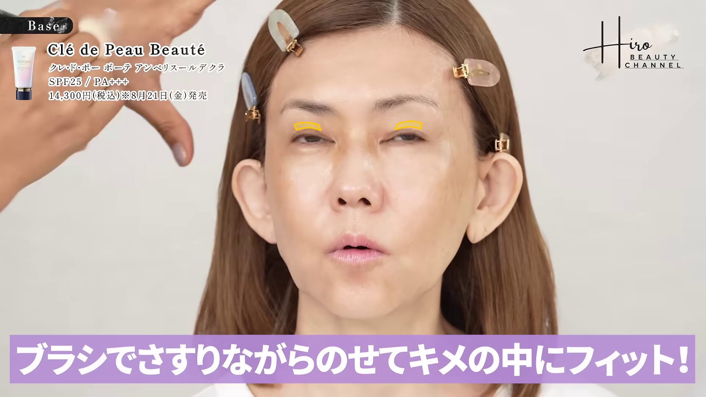
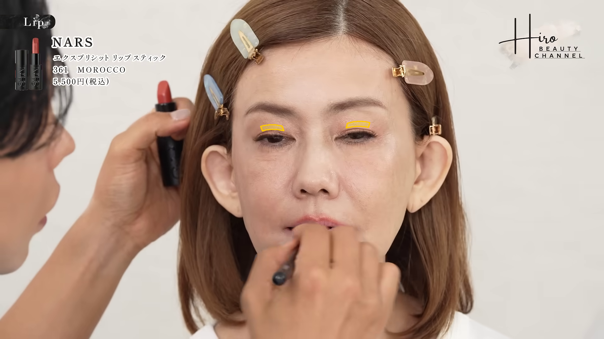

この結果は画像上の記述的特徴です。乾燥・シワの診断、メイク効果の因果推定、美しさの採点ではありません。 眉下の皮膚の高周波指標にはピント・照明・圧縮・眉毛・メイク境界などが混入し得ます。
選択rank 1 ／ before 240.99s → after 1403.49s
候補選定時の顔サイズ上限 1.030。画像自体のサイズ補正・登録・平滑化は行っていません。


| 指標 | 単位 | before | after | 差 | 状態 |
|---|---|---|---|---|---|
| 画面左眉下の皮膚の細かな質感コントラスト（中央値） | 局所L*比 % | 0.201 | 0.966 | +0.766 | ok |
| 画面左眉下の皮膚の細かな質感コントラスト（p90） | 局所L*比 % | 0.783 | 3.232 | +2.449 | ok |
| 画面右眉下の皮膚の細かな質感コントラスト（中央値） | 局所L*比 % | 0.145 | 0.742 | +0.596 | ok |
| 画面右眉下の皮膚の細かな質感コントラスト（p90） | 局所L*比 % | 0.489 | 2.754 | +2.265 | ok |